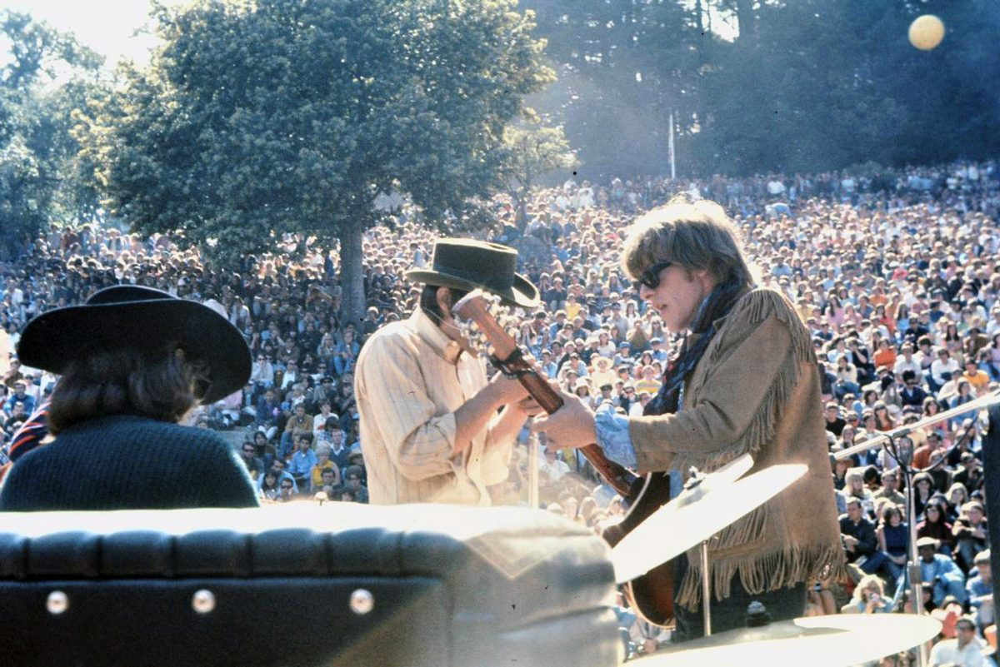

Somebody to Love was Jefferson Airplane's first hit, a No. 5 single on the Billboard Hot 100 in 1967.
Darby Slick wrote it for the Great Society, and his sister-in-law Grace Slick carried it into the Airplane.
The band's harder, faster version became an anthem of San Francisco's Summer of Love.

Table of Contents
- Darby Slick Writes Someone to Love
- The Great Society Single
- The Airplane Version
- Chart Run and Legacy
- FAQ
Darby Slick Writes Someone to Love
Darby Slick played guitar in the Great Society, a San Francisco band with his brother Jerry on drums and Jerry's wife, Grace, singing.
He wrote the song in 1965, after realizing his girlfriend had left him.
Its first title was Someone to Love.
San Francisco in the mid-1960s was the center of free love.
Darby Slick saw a downside in it, because it could breed jealousy and distance.
So the lyric argues for loyalty, and it asks the listener to find one true love to lean on.
The Great Society Single
The Great Society recorded the song on December 4, 1965.
Sylvester Stewart, soon famous as Sly Stone, produced the band's single.
Northbeach Records released it in February 1966, paired with Free Advice, another Darby Slick song.
It barely circulated outside San Francisco and did not chart.
Grace Slick's vocal on it is far more subdued than what came later.
How Jefferson Airplane Made Somebody to Love a Hit
Hollywood, November 1966
Grace Slick joined Jefferson Airplane in October 1966.
She brought two songs from her old band: her own White Rabbit and Darby's.
The Airplane recorded both on November 3, 1966, at RCA Victor's studio in Hollywood, with Rick Jarrard producing.
The new version ran 2:54 and hit much harder than the original.
A Different Song
Slick now sang the lines as accusations, with real menace on the verses about bread and friends who treat you like a guest.
Each two-line verse sets a scene of alienation, then the chorus repeats the question.
Jorma Kaukonen closes the record with a solo that uDiscover Music ranks among the 100 greatest guitar solos.
Release
Surrealistic Pillow came out on February 1, 1967, with the song on it.
RCA Victor issued it as a single backed with She Has Funny Cars.
Billboard called it a "wild dance number loaded with vocal excitement."
Chart Run and Legacy
| Chart | Peak |
|---|---|
| Billboard Hot 100 | No. 5 |
| Cash Box Top 100 | No. 5 |
| Canada RPM | No. 1 |
It was one of the first big hits to come out of the Bay Area counterculture.
Along with its album, it told the rest of the country about Haight-Ashbury.
Honors and Later Versions
- No. 274 on Rolling Stone's list of the 500 Greatest Songs of All Time
- Certified gold by the RIAA in 2017
- The band played it at Woodstock in August 1969
- Boogie Pimps' 2003 remix reached No. 3 on the UK chart in 2004
Darby Slick later used his royalties to spend years studying Indian music.
The song is from 1967, and it is on our list of the best 60s songs.
For the wider scene, see our 1960s psychedelic rock guide.
FAQ
Who wrote the song?
Darby Slick wrote it, Grace Slick's brother-in-law and the guitarist in the Great Society.
He wrote it in 1965 after realizing his girlfriend had left him.
Did Jefferson Airplane write it or cover it?
It was a cover of sorts.
The Great Society recorded it first, as Someone to Love, in December 1965.
Grace Slick brought it with her when she joined the Airplane in October 1966.
Who sings lead on the Airplane version?
Grace Slick sings lead.
She also sang it in the Great Society, where her delivery was softer.
How high did it chart?
It reached No. 5 on the Billboard Hot 100 and No. 5 on Cash Box in 1967.
It was the band's first hit, ahead of White Rabbit at No. 8.
Did Jefferson Airplane play it at Woodstock?
Yes.
The band played it during its early-morning set at Woodstock in August 1969.
A breakup song from a club band became the record that put San Francisco on the national charts.
Wikipedia's entry on the song has more on the Great Society original and later covers.
Back on the 1960smusic.net homepage, the decade is waiting, but first play Somebody to Love one more time.